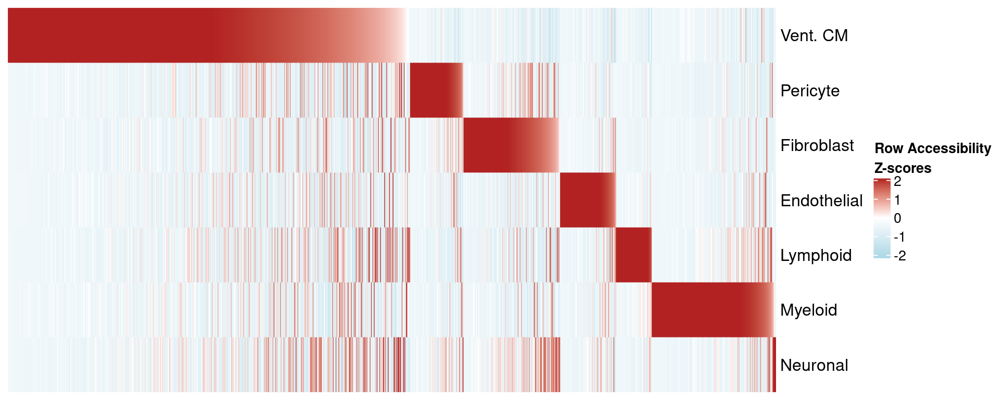

Heart Atlas - Combined
Alan Selewa
Introduction
10X snRNA-seq and snATAC-seq was ran on 6 regions of the heart from 3 individuals. Here we explore the clustering results from combining all donors and heart chambers for both modalities. Generally the data were good quality. We removed cells with small libraries (< 1000 UMI in RNA, < 3000 unique fragments in ATAC). We also removed doublets in ATAC-seq using ArchR's doublet removal scheme. For RNA-seq, we removed doublets using the DoubletFinder tool.
Clustering
The dimensionality reduction and clustering was done outside of this notebook and the resulting objects were serialized/saved. Details as to how the data were processed are in R/.
suppressMessages(library(Seurat))
suppressMessages(library(ArchR))
suppressMessages(library(ComplexHeatmap))
suppressMessages(source('../R/analysis_utils.R'))
srna <- readRDS('../seurat/Heart_RNA_Processed_Combined.rds')
satac <- suppressMessages(loadArchRProject('../ArchR/ArchR_heart/', showLogo = F))We can visualize the six different regions:
palette <- setNames(brewer.pal(6, "Set2"), unique(srna$region))
p1 <- DimPlot(srna, label = F, group.by='region', cols = palette) + ggClean() + ggtitle('scRNA-seq')
p2 <- custom_archr_umap(archr_project = satac, group.by = 'regions', palette = palette, legend = F, label = F, pt.size = 0.05) + ggtitle('scATAC-seq')
p1 + p2We can visualize the clustering results with the inferred cell types. I used the following markers to define cell types:
| marker | CellType |
|---|---|
| TTN/MYBPC3 | Cardiomyocytes |
| MYH7 | Vent. CM |
| NPPA | Atrial CM |
| RGS5/ABCC9 | Pericyte |
| MYH11/TAGLN | Smooth Muscle |
| DCN/PDGFRA | Fibroblast |
| PECAM1/VWF | Endothelial |
| PLP1 | Neuronal |
| CDA8/LCK | Lymphoid |
| CD14/FOLR2 | Myeloid |
palette <- readRDS('palette.rds')
p1 <- DimPlot(srna, label = T, cols = palette) + ggClean() + NoLegend() + ggtitle('scRNA-seq')
p2 <- custom_archr_umap(archr_project = satac, group.by = 'CellTypes', palette = palette, legend = F, label = T) + ggtitle('scATAC-seq')
p1 + p2
We recover 9 cell types in scRNA-seq and 7 in scATAC-seq. How do they compare in proportion?
As expected, cardiomyocytes are the dominant cell type in both assays.
freq <- table(Idents(srna))/length(Idents(srna))
p1 <- make_freq_plot(freq, palette = palette) + LegendOff() + ggtitle('scRNA-seq')
freq <- table(satac$CellTypes)/length(satac$CellTypes)
p2 <- make_freq_plot(freq, palette = palette) + LegendOff() + ggtitle('scATAC-seq')
p1 + p2CRE discovery
Here we run macs2 on ATAC-seq aggregates of each cell-type to discover cell-type specific peaks. Below shows the number of peaks called in total and for each cell type. As expected, most peaks are not protein coding.
peak.info <- getPeakSet(satac)
peak.info.per <- peak.info@metadata$PeakCallSummary
pal <- c("Distal" = "#60BA64", "Exonic" = "#73C6FF", "Intronic" = "#620FA3", "Promoter" = "#FFC554")
ggplot(peak.info.per, aes(x=Group, y=Freq, fill=Var1)) + geom_bar(stat='identity') + labs(fill='') +
scale_fill_manual(values = pal) + ggClean(rotate_axis = T) + ylab("Number of Peaks \n (10^3)")Differential accessibility analysis
Approach
I used two approaches for differential accessibility:
- one vs all single-cell differential accessibility (Wilcoxon rank sum test)
- one vs all pseudo-bulk differential accessibility in edgeR (as was done in Hocker et al.)
In general, the one vs all single-cell method with Wilcoxon rank sum test has more consistent peaks across donors (shown below). While the edgeR method yields similar results in terms of motifs, Hocker et al. used each chamber as a sample, therefore the samples are not independent.
Because differential accessibility does not gaurantee features that are group-specific (only that they are upregulated), I came up with a procedure to get cell-type specific peaks. First, we set a threshold for the FDR and Log2FC (say 1% and 1, respectively). Then we count in how many cell-types every peak appears as differetially accessible. Finally, we only keep peaks that appear in a single cell-type at this FDR and log2FC.
archrPeaks <- readRDS('../ArchR/ArchR_heart/PeakCalls/DA_markerPeaks.rds')
pass_markers <- getMarkers(seMarker = archrPeaks, cutOff = "FDR <= 0.01 & Log2FC >= 1", returnGR = T)union.peaks <- getPeakSet(satac)
union.peaks.str <- GRToString(union.peaks)
peak.count <- rep(0, length(union.peaks.str))
peak.type <- rep(NA, length(union.peaks.str))
for(p in names(pass_markers)){
hits <- GenomicRanges::findOverlaps(query = union.peaks, subject = pass_markers[[p]])
peak.count[queryHits(hits)] <- 1 + peak.count[queryHits(hits)]
peak.type[queryHits(hits)] <- p
}
peak.df <- data.frame(peak.name=union.peaks.str, cell.type.count=peak.count, peak.type=peak.type, stringsAsFactors = F)
peak.df <- peak.df[peak.df$cell.type.count==1, ]mean.mat.df <- as.matrix(SummarizedExperiment::assays(archrPeaks)[["Mean"]])
colnames(mean.mat.df) <- archrPeaks@colData@rownames
rowD <- rowData(archrPeaks)
row.names(mean.mat.df) <- paste0(rowD$seqnames,':',rowD$start,'-',rowD$end)
DA.mat <- mean.mat.df[peak.df$peak.name, ]types <- c("Vent. CM", "Pericyte","Fibroblast","Endothelial","Lymphoid","Myeloid","Neuronal")
mat.list <- list()
splits <- c()
for(t in types){
curr <- DA.mat[peak.df$peak.name[peak.df$peak.type==t],]
curr <- curr[order(curr[,t], decreasing = T),]
mat.list[[t]] <- curr
splits <- c(splits, rep(t,nrow(curr)))
}Having obtained cell-type specific regulatory peaks, we can plot the per-cell-type average accessibility. As we can see, the peaks are largely accessible in only one cell-type. Note that these are not-zscores, but absolute measures of accessibility.
mat.df <- Reduce(rbind, mat.list)
mat.df <- mat.df[,types]
Heatmap(matrix = mat.df, cluster_rows = F, cluster_columns = F, show_row_names = F, name = "Mean Accessibility",
col = circlize::colorRamp2(c(0, 0.1, 0.4), c("black","purple","yellow")),
column_split = factor(colnames(mat.df), levels=types),
row_split = factor(splits, levels=types),
row_title = NULL,
column_title = NULL,
row_gap = unit(1, "mm"),
column_gap = unit(1, "mm"))We can plot the same for Z-scores to see the degree of variance for each peak.
scaleTo <- 10^4
DA.mat.scale <- log2(t(t(mean.mat.df)/colSums(mean.mat.df)) * scaleTo + 1)
zscore.mat <- sweep(DA.mat.scale - rowMeans(DA.mat.scale), 1, matrixStats::rowSds(DA.mat.scale), `/`)
row.names(zscore.mat) <- paste0(rowD$seqnames,':',rowD$start,'-',rowD$end)
zscore.mat <- zscore.mat[peak.df$peak.name,]
types <- c("Vent. CM", "Pericyte","Fibroblast","Endothelial","Lymphoid","Myeloid","Neuronal")
mat.list <- list()
for(t in types){
curr <- zscore.mat[peak.df$peak.name[peak.df$peak.type==t],]
curr <- curr[order(curr[,t], decreasing = T),]
mat.list[[t]] <- curr
}
mat.df <- Reduce(rbind, mat.list)
mat.df <- t(mat.df[,types])p_diff_peaks <- Heatmap(matrix = mat.df,
cluster_rows = F,
cluster_columns = F,
show_row_names = T,
show_column_names = F,
name = "Row Accessibility\nZ-scores",
col = circlize::colorRamp2(c(-2,0,2), c("lightblue","white","firebrick")),
width = 4)
p_diff_peaks
Motif enrichment
Next we compare these two peak sets in terms of motif enrichment. Below we plot the enrichment of motifs in Vent. CM peaks from both methods using aggregate donor data for each cell-type.
archr_motifUp <- suppressMessages(peakAnnoEnrichment(seMarker = archrPeaks,
ArchRProj = satac,
peakAnnotation = "Motif",
cutOff = "FDR <= 0.01 & Log2FC >= 1"))CURR_CELL_TYPE <- "Vent. CM"
TF.fdr.mat <- archr_motifUp@assays@data$mlog10Padj
TF.fdr.mat <- TF.fdr.mat[,types]
TF.fdr <- TF.fdr.mat[ ,CURR_CELL_TYPE, drop = FALSE]
TF.fdr <- TF.fdr[order(TF.fdr[CURR_CELL_TYPE], decreasing = T),,drop=F]
signif.TFs <- row.names(TF.fdr)[TF.fdr[,1] > 1]
TFs <- sub('_.*', replacement = "", x = signif.TFs)topN <- 5
topMotifs <- c()
for(t in colnames(TF.fdr.mat)){
idx <- order(TF.fdr.mat[,t], decreasing = T)[1:topN]
currTop <- rownames(TF.fdr.mat)[idx]
topMotifs <- c(topMotifs, currTop)
}
top.FDR.mat <- t(as.matrix(TF.fdr.mat[topMotifs,]))
top.FDR.mat[top.FDR.mat > 100] <- 100motif_mat <- Heatmap(matrix = top.FDR.mat, cluster_rows = F, cluster_columns = F,
col = circlize::colorRamp2(c(0,33,66,100), c("lightgrey","dodgerblue","purple","black")), border = T,
column_split = factor(colnames(top.FDR.mat), levels = colnames(top.FDR.mat)),
row_split = factor(rownames(top.FDR.mat), levels = rownames(top.FDR.mat)),
row_title = NULL,
column_title = NULL,
row_gap = unit(0, "mm"),
column_gap = unit(0, "mm"),
width = 5, name = "Motif Enrichment (-log10 pval)")
motif_matp_comb <- p_diff_peaks + motif_mat
draw(p_comb, main_heatmap="Motif Enrichment (-log10 pval)")